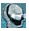
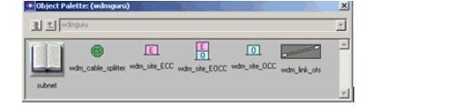
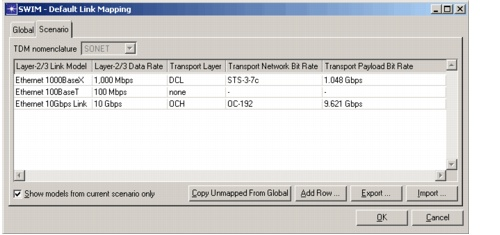
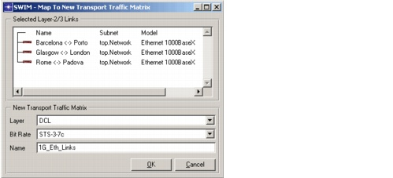
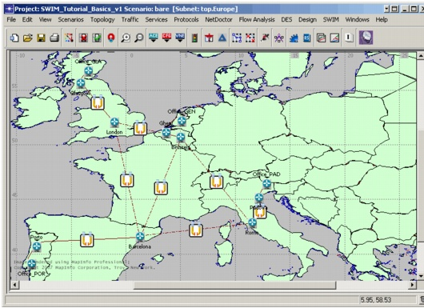
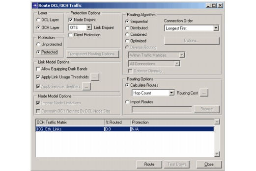
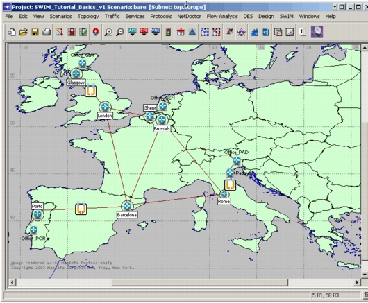
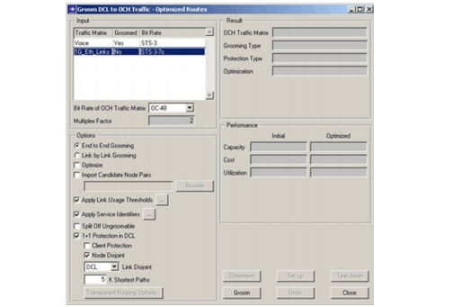
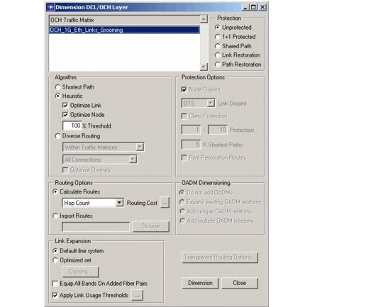
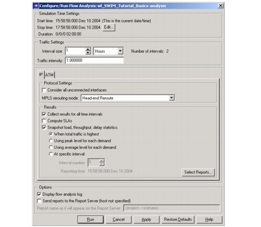

Instructions
Procedure 2-1 Defining the Integrated SP Guru Network Planner / SP Guru Transport Planner Project
- Open the SWIM_Tutorial_Basics project in SP Guru Network Planner.
- Select File > Open.
- Select the SWIM_Tutorial_Basics project. Click Open. Note that the current scenario is named bare. The IP network is represented in SP Guru Network Planner.
- Inspect the underlying transport network in SP Guru Transport Planner.
- Select SWIM > Switch To Corresponding Transport Network or click the
toolbar button. The transport network appears in SP Guru Transport Planner. - Select Network > Connection Browser. This dialog box shows the traffic accommodated in the network on a per-layer basis. There is one traffic matrix, Voice, accommodated by the DCL layer. The OCH layer contains Optical_Leased_Lines and OCH_Voice_Grooming. OCH_Voice_Grooming does not represent any user traffic; it represents the optical traffic that supports the groomed DCL traffic.
- Close the Connection Browser.
- Switch to the Layer-2/3 network: select SWIM > Switch To Corresponding Layer-2/3 Network or click the

toolbar button. - Currently, the IP network is represented in SP Guru Network Planner and the transport network is represented in SP Guru Transport Planner. There is no relationship between the two networks yet. To create a relationship, start by defining associations between the nodes. Layer-2/3 nodes are associated with Transport nodes. This means that the IP router (in SP Guru Network Planner) is interconnected to the corresponding cross-connect (in SP Guru Transport Planner) to access the transport network.
- Select SWIM > Node/Link Mapping > Map Nodes... to map the Layer-2/3 nodes to the corresponding Transport nodes.
- Select node Barcelona in the left pane. Note that Barcelona is automatically selected in the right pane.
- Click on the >> button. The association is made between node Barcelona in SP Guru Network Planner and its counterpart in SP Guru Transport Planner.
- Select the top subnet in the left pane.
- Click the Auto >> button. This maps all selected Layer-2/3 nodes to their namesakes in SP Guru Transport Planner. This only works when the names of the corresponding nodes in SP Guru Network Planner and SP Guru Transport Planner match exactly.
- Select Ghent and Brussels (while holding the Ctrl key) in the left pane.
- Select Belgium in the right pane. Make sure no other item in the pane is selected.
- Click the >> button to relate both Layer-2/3 nodes to the one Transport node.
- Select the node Padova in the left pane. Note that the New... 1 to 1 entry is selected in the right pane.
- Click the >> button. The SWIM – Map To New Transport Node dialog box appears.
- Select ECC as node type and Padova as name. Click OK.
- Verify that only the Office_XXX nodes are left unmapped, and click OK to save the node mappings.
- Check the node mappings in the network.
- Select all nodes in the Layer-2/3 network.
- Select SWIM > Switch To Corresponding Transport Network. Note that all corresponding nodes in the Transport network are selected. Also note the newly created ECC node Padova.
- Create links in SP Guru Transport Planner.
- Open the object palette by clicking the toolbar button
(or by selecting Edit > Open Object Palette. - Select the wdm_link_ots icon and create a link between Padova and Munchen by clicking on both nodes. Similarly, create a link between Padova and Rome. Right-click (or click the Esc key) to stop adding links.
- Close the object palette.
- Define the concatenated bit rate STS-3-7c in SP Guru Transport Planner as a concatenation of seven STS-3 connections. This bit rate will be used to support the Gigabit Ethernet links in step 9.
- Select Network > Custom Bit Rates... This dialog box lets you define new bit rates.
- Click Add Bit Rate in the DCL layer section. This creates a new bit rate for the SONET traffic. Fill in STS-3-7c as name for the new bit rate. Note that STS-3 will automatically appear as Base Bit Rate and 7 as Concatenation Count. Click OK.
- Switch to the Layer-2/3 network: select SWIM > Switch To Corresponding Layer-2/3 Network.
- Verify the default settings for the link mapping. These default settings define how the IP links are translated to the transport network. Each IP link is translated to a connection to be routed in the transport network. The default link mapping defines defaults for the layer and bit rate of this connection in SP Guru Transport Planner, depending on the link model in SP Guru Network Planner.
- Select SWIM > Node/Link Mapping > Set Link Mapping Defaults... The SWIM – Default Link Mapping dialog box appears. Select the Scenario tab.
- Verify that DCL (Transport Layer) and STS-3-7c (Transport Bit Rate) are selected for the Ethernet 1000BaseX model.
- Verify that OCH (Transport Layer) and OC-192 (Transport Bit Rate) are selected for the Ethernet 10Gbps Link model.
- Click OK to close the dialog box.
- Define the link mapping.
- Verify the checkmarked menu item SWIM > Automatically Update Operational Status Visualization is turned on, to show the operational status of mapped links. If a link is unmapped or if its operational status is up, no icon is overlaid. In our case the network view does not change since no Layer-2/3 link have been mapped to the transport network.
- Select SWIM > Node/Link Mapping > Map Links... The dialog box that appears is analogous to the one for mapping nodes. It displays the Layer-2/3 links on the left and the Transport objects to which they are mapped on the right (in this case, traffic matrices).
- Select Ethernet 1000BaseX in the left pane. Note that New... Per model is automatically selected in the right pane. This automatically creates a new traffic matrix in SP Guru Transport Planner.
- Click on the >> button. The SWIM – Map To New Transport Traffic Matrix dialog box appears. In this dialog box you can specify the Transport traffic matrix.
- Note that DCL is automatically entered as layer for the new traffic matrix, STS-3-7c as bit rate. This is done based on the entry for link model Ethernet 1000BaseX in the default link mapping settings you reviewed in step 9. Enter 1G_Eth_Links as the name. Click OK.
- Select the Ethernet 10Gbps Link model in the left pane and click on the Auto >> button. Note that the Ethernet 10Gbps links are mapped to an OC-192 traffic matrix (named swim_OCH_OC-192) at the OCH layer, as specified in the SWIM > Set Link Mapping Defaults dialog box (see step 9).
- Right-click on the swim_OCH_OC-192 traffic matrix and select Set name. Fill in 10G_Eth_Links as the new name for this traffic matrix. Click OK.
- Click OK in the SWIM – Map Links dialog box. Note that all of the mapped
links are overlaid with an icon. The icon indicates that the links have been mapped to traffic matrices at the transport network, but this traffic is not yet set up. This will be done in SP Guru Transport Planner.
Note—The Layer-2/3 node Padova does not yet have a Transport counterpart. We will create a new Transport node for this node.
Figure 2-1 wdmguru Object Palette

Figure 2-2 Scenario Tab of Default Link Mapping Dialog Box

Figure 2-3 Map to New Transport Traffic Matrix Dialog Box

Note—You might need to uncheck the Selected checkbox to see the Ethernet 10Gbps Link model.
Figure 2-4 Mapped Links in SP Guru Network Planner

End of Procedure 2-1
Procedure 2-2 Dimension the Transport Network to Accommodate the New Traffic
- Switch to the Transport network: select SWIM > Switch To Corresponding Transport Network.
- Verify that the link mapping resulted in new traffic demands in SP Guru Transport Planner.
- Select Network > Traffic Matrix Editor (or click the
toolbar button). This dialog box lets you manage traffic matrices. - Select the OCH layer. Note that a new OC-192 traffic matrix named 10G_Eth_Links has been created on the OCH layer. The Native setting indicates that the traffic matrix is External. This means that they have an external origin, in this case SP Guru Network Planner.
- Select the DCL layer. A new STS-3-7c traffic matrix named 1G_Eth_Links has been created.
- Close the Traffic Matrix Editor dialog box.
- Verify that there is sufficient capacity in the transport network to support the Ethernet 1-Gbps links. To do so, try to route the corresponding 10G_Eth_Links traffic matrix in the OCH layer of SP Guru Transport Planner. We are using protected routing in the OCH layer to ensure that if an IP link is affected by a cable break, traffic can still run over the link because the IP link is routed over its protection path at the optical layer.
- Select Design > Route DCL/OCH Traffic (or click the toolbar button).
- Select the OCH Layer and the traffic matrix 10G_Eth_Links. Select Protected and Node Disjoint (no Client Protection). Click Route.
- Close the dialog boxes.
- Switch to the Layer-2/3 network.
- Verify that the 10Gbps Ethernet links are up.
- The SWIM > Automatically Update Operational Status Visualization option should still be enabled (indicated by a check mark). The 1Gbps Ethernet links still have an
icon overlaid, indicating that they have been mapped to Transport connections, but have not been set up yet. The 10Gbps Ethernet links no longer have an overlay icon, since their associated Transport connections are up and running. - Verify that the 1Gbps Ethernet links are down.
- Select SWIM > Show Connections Browser On Switching To Transport Network. The Connections Browser opens if any mapped links are selected when you switch to SP Guru Transport Planner.
- Select the 1Gbps Ethernet links (hold down the Ctrl key and click on each of the links marked with an

icon). - Select SWIM > Switch To Corresponding Transport Network.
- The SWIM - Connections Browser dialog box opens. Use the + icon at the
left of a connection to view more details about the connection. Note that each of the connections is unrouted. This is also seen from the red link icon for the Layer-2/3 link element in the tree. - Close the Connections Browser.
- Verify that there is insufficient capacity in the transport network to support the 1Gbps Ethernet links by attempting to route the corresponding 1G_Eth_Links traffic matrix in the DCL layer of SP Guru Transport Planner.
- Select Design > Route DCL/OCH Traffic....
- Select DCL Layer and the SONET traffic matrix 1G_Eth_Links. Choose the same options as in step 3: Protected and Node Disjoint. Click Route.
- The Routing Results dialog box opens. No routes were found due to lack of capacity. (To verify this: use the DCL toolbar button to inspect the DCL layer. All DCL links from node Glasgow are completely used—no free capacity left—and no capacity is available on the links from node Padova.) The capacity of the Transport network needs to be expanded since there is not enough free capacity in the network to accommodate the 1G Ethernet links.
- Close the dialog boxes.
- Groom the SONET traffic matrix 1G_Eth_Links.
- Select Design > Groom DCL to OCH Traffic > Optimized Routes... (or use
toolbar button). This dialog box is used to map SONET traffic to optical channels. If needed, the grooming algorithm installs extra equipment to accommodate the SONET traffic matrix. - Select the SONET traffic matrix 1G_Eth_Links. Choose the following options: OC-48 (bit rate of the optical channels to which the DCL traffic is groomed), End to End Grooming (no optimization), 1+1 Protection in DCL (no client protection), Node Disjoint and DCL Link Disjoint. Click Groom.
- When the grooming action is complete, a new OCH traffic matrix (named OCH_1G_Eth_Links_Grooming) is created that supports the DCL traffic matrix 1G_Eth_Links. Note that these traffic matrices are not yet accommodated in the network.
- Click Dimension in the Groom DCL to OCH Traffic - Optimized Routes dialog box.
- The Dimension DCL/OCH Layer dialog box opens. This dialog box lets you accommodate OCH layer matrices in the network. If needed, extra network equipment is added to try to entirely accommodate a given traffic matrix in the network.
- Select the newly created OCH traffic matrix OCH_1G_Eth_Links_Grooming. Select Unprotected (Protection), Heuristic (enable Optimize Link and Optimize Node), and accept the default settings for the other options.
- Click Dimension. The Results of Dimensioning dialog box opens. Note that both traffic matrices, OCH_1G_Eth_Links_Grooming and 1G_Eth_Links, are now entirely accommodated in the network. This adds 18 OXC ports; no extra fibers need to be installed.
- Close all dialog boxes.
- Switch to the Layer-2/3 network.
- Select SWIM > Switch To Corresponding Layer-2/3 Network to return to SP Guru Network Planner.
- Save the project under a different name: select File > Save As and save the project as <initials>_SWIM_Tutorial_Basics.
Figure 2-5 Route DCL/OCH Traffic Dialog Box

When the action is finished, the 10G_Eth_Links matrix are completely set up; the Transport network contains enough free capacity to support all 10G Ethernet links in the Layer-2/3 network.
Figure 2-6 Network in SP Guru Network Planner

Figure 2-7 Groom DCL to OCH Traffic Dialog Box

Figure 2-8 Dimension DCL/OCH Layer Dialog Box

Note—All of the mapped links are no longer marked with any overlay icon since all associated Transport connections are set up.
End of Procedure 2-2
Procedure 2-3 Inspect the Routes Between the Office Nodes
- Duplicate the scenario.
- Run flow analysis to determine the routes of the IP demands.
- Select Flow Analysis > Configure/Run Flow Analysis... (or press Ctrl+Alt+F on the keyboard).
- The Configure/Run Flow Analysis dialog box appears. Keep the default settings. Click Run.
- The Resolve Unassigned IP Addresses for Scenario... dialog box opens. Click Yes.
- Wait until the Flow Analysis Log – SWIM_Tutorial_Basics-analysis dialog box appears. All demands are now routed. Close the dialog box.
- Show the routes between the Ghent and Porto offices.
- Select the nodes Office_GEN and Office_POR (while holding the Ctrl key).
- Select Flow Analysis > Show Routes Between Selected Nodes (or click Ctrl+Alt+S on the keyboard).
- The Show Routes dialog box appears. Click on Show. The routes that appear are Office_GEN -> Ghent -> Brussels -> Barcelona -> Porto -> Office_POR and Office_GEN -> Ghent -> London -> Barcelona -> Porto -> Office_POR, and the reverse routes.
- Click Close in the Show Routes dialog box. This does not clear the routes between Office_GEN and Office_POR.
- Visualize the routes of the links and paths.
- Select SWIM > Open Mapped Connections Browser.... This dialog box lets you visualize the routes of the links and paths of SP Guru Network Planner across all network layers.
- Select Layer 2/3 (Network Layer to Display In Project Editor) and Paths (Layer-2/3 Elements To Show) to visualize the routes in the Layer-2/3 network.
- Select the path through node Brussels. Use the + icon next to the path to inspect the list of links that make up the path. Click on the + icon to the left of a constituent link to verify how the link is mapped on the transport network. Note that the blue link icon indicates that the Layer-2/3 link is up and running.
- Select each link of the path, and DCL, OCH, OMS, and OTS (Network Layer To Display In Project Editor), to browse through the different layers of the transport network and investigate how each link of the route is accommodated in the transport network.
- The Connections Browser also lists the details of the connections for each of the mapped Layer-2/3 links. For example, expanding the link between nodes Barcelona and Porto shows that its delay is 4.180 ms.
- Close the SWIM - Connections Browser dialog box.
Figure 2-9 Configure/Run Flow Analysis Dialog Box

Figure 2-10 Show Routes Dialog Box
End of Procedure 2-3
Procedure 2-4 Failure Analysis
- Switch to the Transport network (if you have not already done so).
- Run a failure analysis.
- Select Info > Failure Analysis, which opens the Failure Analysis dialog box. This dialog box lets you evaluate the effect of equipment failures on the traffic accommodated by the network.
- Click on the OTS toolbar button to view the OTS layer. Fail the cable between Madrid and Barcelona by right-clicking on it and selecting Fail This Cable.
- Click on Evaluate in the Failure Analysis dialog box to verify the impact of the cable failure on the traffic accommodated in the network. In the Overview of Affected Traffic section an overview is given of the affected traffic in the DCL and OCH layers. Do not close the Failure Analysis dialog box.
- Select Network > Connection Browser. Inspect the connections in the DCL and the OCH layers. Note that some connections are lost at the OCH layer only. These lost connections are part of the traffic matrices that support the groomed SONET matrices. The connection between Barcelona and Madrid fails for the traffic matrix OCH_1G_Eth_Links_Grooming, while the connections Barcelona <-> London, Barcelona <-> Madrid, London <-> Madrid and Madrid <-> Rome fail for the OCH_Voice_Grooming traffic matrix. Note that all native OCH traffic survives the failures since it is protected at the OCH layer. Also, the DCL traffic supported by the (partly failing) OCH grooming traffic survives the failures since it is protected at the DCL layer.
- Close the Connection Browser.
- Select SWIM > Switch To Corresponding Layer-2/3 Network (do not close the Failure Analysis dialog box). Note that no IP links fail because they are all protected. This is because the 1G links are protected at the DCL layer, whereas the 10G links are protected at the OCH layer.
- Select SWIM > Open Mapped Connection Browser.... Select Layer 2/3 (Network Layer to Display in Project Editor) and Paths (Layer-2/3 Elements To Show).
- Select the first path again. Select each link of the path, and DCL, OCH, OMS and OTS (Network Layer To Display), to browse through the different layers of the transport network and investigate how each link of the route is accommodated in the transport network. Looking at the route from Office_GEN to Office_POR, you will notice that a detour is taken via London and (at the OTS layer) Bordeaux.
- Close the Connections Browser.
- In SP Guru Network Planner, select Scenarios > Object/Attribute Difference Report > Generate Report to compare the original network to the current IP network, which has been subjected to failures.
- Verify that the bare scenario is selected for comparison and click Generate.
- The Network Difference Tree dialog box appears. Select Objects with differences. This will show that the Barcelona <-> Porto link suffers from a delay increase from 4.180 ms to 14.132 ms, because the supporting connection is switched to its protection path.
- Close the dialog box and select SWIM > Switch To Corresponding Transport Network.
- Click on the OTS toolbar button to go the OTS layer view (do not close the Failure Analysis dialog box).
- Fail the cable between London and Paris by right-clicking on the link and selecting Fail This Cable.
- Click Evaluate in the Failure Analysis dialog box to verify the impact of the double cable failure on the traffic accommodated in the network.
- Switch to SP Guru Network Planner by selecting SWIM > Switch To Corresponding Layer-2/3 Network (without closing the Failure Analysis dialog box). The IP link between Barcelona and London fails because the working and protecting path of its supporting connection at the OCH layer are affected. Also, the link between Barcelona and Porto fails because both the working and protecting path of its supporting connection at the DCL layer are affected.
These failing links are overlaid with the link failed icon. - Close the project.
Note—Note that the unit of delay reported in SP Guru Network Planner, and therefore in the difference report, is in seconds.